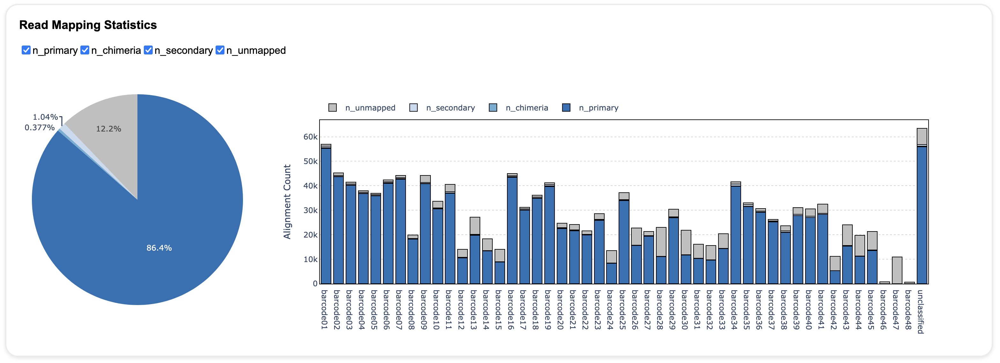
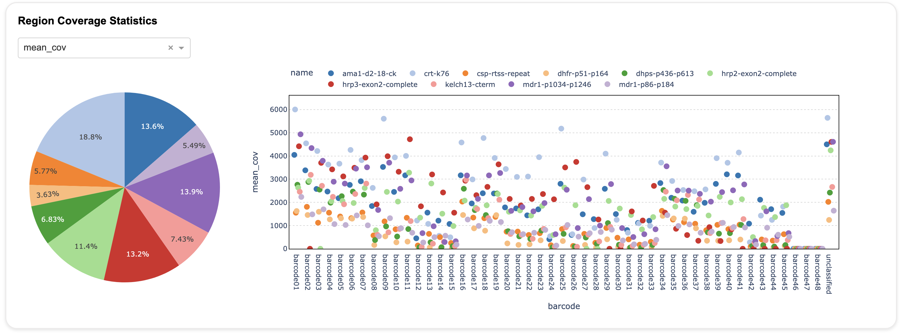
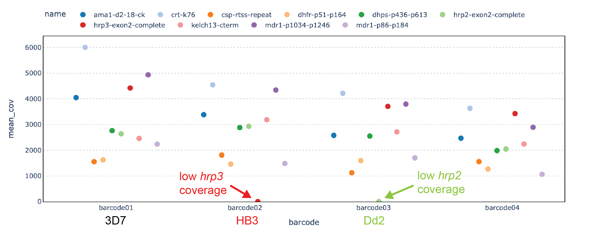
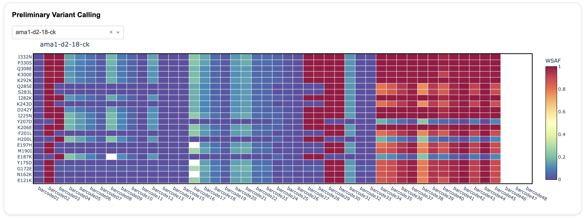

Understanding the Dashboard
The Nomadic dashboard provides information about:
- Read mapping statistics
- Region (i.e. amplicon) coverage statistics
- Variant calling
Each of these outputs has it's own panel in the dashboard, as is described in more detail below.
Read Mapping Statistics
The top panel in the dashboard shows information about read mapping.
Note
Read mapping is the process whereby sequencing reads are aligned to a reference genome based on sequence similarity. The objective of read mapping is to find the location in the reference genome from which a sequencing read likely originated. Sometimes, a single good alignment can be found for a read, but sometimes no good alignments, or multiple equally good alignments are found.

In Nomadic, information about read mapping is displayed in a stacked barplot. For each sequenced sample (x-axis), the total height of the bar is the number of alignments produced after all the reads from that sample were mapped. The colours in the stacked bar indicate the type of alignment that was generated for each read:
- Reads with only one unique alignment to the reference genome are shown in dark blue. These are called primary alignments, and are labeled
Primary. These are the best for downstream analysis. - Reads with no alignments to the reference genome are shown in grey. These are unmapped reads, and labeled
Unmapped. This can happen if the read is too short or low quality to be accurately mapped, or derives from an organism other than the reference genome. With NOMADS-MVP, the unmapped reads typically represent offtarget amplification of the host genome. - Reads with two or more alignments to the reference are labeled in the lighest shade of blue. These are called secondary alignments, are are labeled
Secondary. These can occur when a sequencing read originates from a repetitive region of the genome. - Reads that must be split in pieces to be aligned to the reference genome are shown in the middle shade of blue. These are called chimeric alignments, and are labeled
Supplementary. These are usually caused by technical factors during library preparation of sequencing, but can also indicate structural varation.
The pie chart at the left shows the overall read mapping distribution across all sequenced samples.
Other points to note:
- In the y-axis labels, 'k' refers to thousands. So 10k = 10,000.
- If you are sequencing with NOMADS-MVP, lower parasitemia samples will have more unmapped reads (grey).
Region Coverage Statistics
The second panel of the dashboard shows information about the amount of coverage over your target regions. For amplicon sequencing, the target regions are defined by your amplicons.
Note
Coverage is a measure of the number of sequencing reads that 'cover' a given position of the genome. By position, we mean a single nucleotide in the genome. A read covers that position if, after read mapping, its alignment includes the position. The mean coverage over a region is the mean of the coverage of all the positions included in the region.

Nomadic shows this information as a scatter plot. For each sample (x-axis), a point will be drawn for each target region. The colour indicates the identity of the target region and there is a legend at the top of the plot. For example, in NOMADS-MVP, the pink points correspond to kelch13. The y-axis gives the mean coverage (mean_cov), number of reads (n_reads) or percentage of bases with greater than 100x coverage (cov_gr100_per), depending on what is selected in the drop down menu located above the pie chart.
The pie chart aggregates information across all samples. In an ideal scenario, the slices of the pie will be close to equal, indicating that the different target regions have similar coverage. In practice, coverage can vary between targets due to differences in PCR efficiency. As long as the lowest abundance amplicon is still recieving sufficient coverage (typically 100x), this is not a major problem.
Identifying candidate hrp2/3 deletions with NOMADS-MVP

You can use the 'Region Coverage Statistics' panel to identify candidate hrp2 and hrp3 deletions.
Preliminary Variant Calling
The bottom panel of the dashboard shows information about variant calling.

Nomadic shows variant calling information as a heatmap for each target region. You can select different target regions using the drop down menu at the top left. In the heatmap, the samples are on the x-axis and the variants (i.e. mutations) are on the y-axis. The colour in each cell of the heatmap gives the within-sample alternative allele frequency (WSAF).
Note
The within-sample alternative allele frequency (WSAF) is the fraction of sequencing reads that carry the alternative allele (i.e. variant or mutation). It ranges from 0 to 1.
| Colour | WSAF | Interpretation | Conclusion |
|---|---|---|---|
| Dark purple | 0.0 | None of the reads in the sample carry the mutation. | The sample does not have the mutation. It is homozygous reference. |
| Dark red | 1.0 | All of the reads in the sample carry the mutation. | The sample does carry the mutation. It is homozygous alternative. |
| Light blue, yellow, orange | 0.0 < WSAF < 1.0 | The WSAF is between 0 and 1. These means some, but not all, of the reads in the sample carry the mutation. For P. falciparum malaria, this indicates that the sample is polyclonal, and at least one clone has the mutation. | The sample does carry the mutation. It is heterozygous alternative. |
| White | Not available | This indicates that not enough sequencing reads have been collected for the sample to make a determination. | Not enough data. Sample has failed or more sequencing time is required. |
In the plot above shows the target ama1 for a set of control samples. The first three barcodes are 3D7, HB3 and Dd2. They are monoclonal, so all mutations are either dark purple (WSAF=0) or dark red (WSAF=1). After that, we have mixed strains together at different proportions, making them polyclonal, which leads to intermediate colours. The last three barcodes (46, 47, 48) are negative controls, hence they are the heatmap is white.